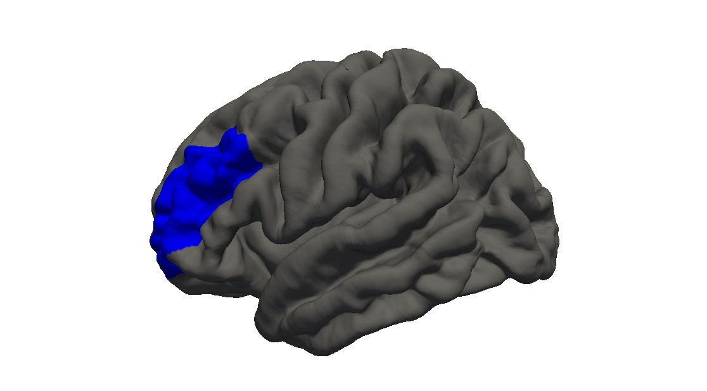
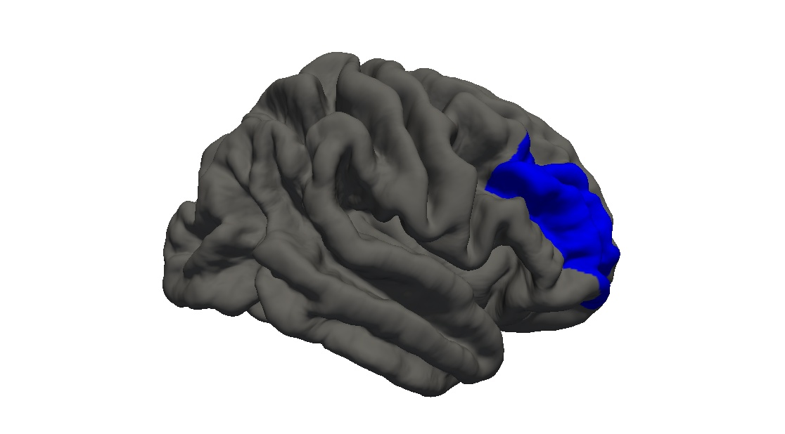

<h3>rostralmiddlefrontal -- localization</h3>



<h3>rostralmiddlefrontal -- <a href="../../measurebased/FreeSurfer.DesikanKilliany/pctmean.html">grey-white contrast</a></h3>


<h3>rostralmiddlefrontal -- <a href="../../measurebased/FreeSurfer.DesikanKilliany/area.html">surface area</a></h3>


<h3>rostralmiddlefrontal -- <a href="../../measurebased/FreeSurfer.DesikanKilliany/thickness.html">mean cortical thickness</a></h3>


<h3>rostralmiddlefrontal -- <a href="../../measurebased/FreeSurfer.DesikanKilliany/thicknessstd.html">standard deviation of the cortical thickness</a></h3>


<h3>rostralmiddlefrontal -- <a href="../../measurebased/FreeSurfer.DesikanKilliany/volume.html">grey-matter volume</a></h3>


<h3>rostralmiddlefrontal -- <a href="../../measurebased/FreeSurfer.DesikanKilliany/meancurv.html">mean curvature</a></h3>


<h3>rostralmiddlefrontal -- <a href="../../measurebased/FreeSurfer.DesikanKilliany/gauscurv.html">Gaussian curvature</a></h3>


<h3>rostralmiddlefrontal -- <a href="../../measurebased/FreeSurfer.DesikanKilliany/foldind.html">folding index</a></h3>


<h3>rostralmiddlefrontal -- <a href="../../measurebased/FreeSurfer.DesikanKilliany/curvind.html">curvature index</a></h3>


